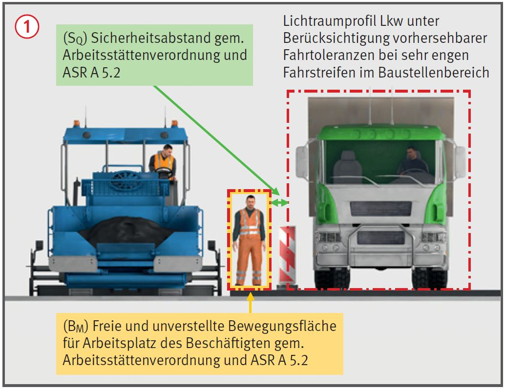
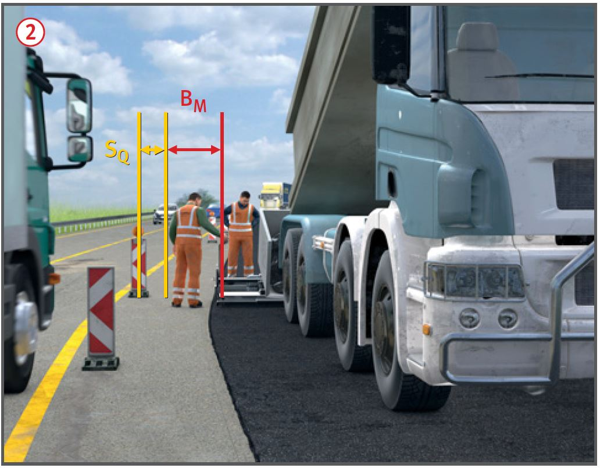

Bei fehlender oder falscher Baustellensicherung/Beschilderung können Personen z. B. durch Fahrzeuge erfasst oder angefahren werden.

Allgemeines
Der Verkehr muss sicher an der Arbeitsstelle vorbeigeleitet werden.
Straßenbaustellen so planen, einrichten und durchführen, dass Gefährdungen durch den fließenden Verkehr für Beschäftigte möglichst vermieden und verbleibende Gefährdungen möglichst gering gehalten werden z. B. Umleitung des Verkehrs.
Arbeitsplätze durch Schutzeinrichtungen (z. B. transportable Schutzeinrichtungen) oder Leiteinrichtungen (z. B. Leitbaken), jeweils in Verbindung mit ausreichend bemessenen Sicherheitsabständen vor dem vorbeifließenden (SQ) oder ankommenden (SL) Verkehr schützen .
Für im Schutz der Verkehrssicherung durchgeführte Arbeiten muss ausreichend Platz (BM) für ein sicheres Arbeiten vorhanden sein .

Schutzmaßnahmen
Sichere Verkehrsführung
Die Verkehrssicherung erfolgt nach der Straßenverkehrsordnung (StVO) in Verbindung mit den Richtlinien für die Sicherung von Arbeitsstellen an Straßen (RSA). Diese betreffen ausschließlich verkehrsrechtliche Regelungen und ausdrücklich nicht den Schutz der Beschäftigten.
Vor Beginn von Arbeiten, die sich auf den öffentlichen Straßenverkehr auswirken, verkehrsrechtliche Anordnung über Art und Umfang der Baustellensicherung bei der zuständigen Behörde einholen. Bei Beantragung der Anordnung einen Verkehrszeichenplan vorlegen, der
die tatsächlichen örtlichen Verhältnisse und die für das Bauverfahren erforderlichen Platzverhältnisse berücksichtigt,
die erforderlichen Sicherheitsabstände zwischen Verkehrsbereich und Arbeitsplätzen, Arbeitsmaschinen und Arbeitseinrichtungen berücksichtigt.
Weitere wichtige Angaben in der verkehrsrechtlichen Anordnung:
ggf. Beschreibung einzelner Arbeitstakte bzw. Bauphasen,
tatsächlich vorhandene Restbreiten von eingeschränkten Fahrbahnteilen,
Gültigkeitsdauer der Anordnung: Beginn und Ende,
Geschwindigkeitsbeschränkungen,
Name, Anschrift und Telefon des Verantwortlichen/Stellvertreters während und nach der Arbeitszeit.
Die verkehrsrechtliche Anordnung und der angeordnete Verkehrszeichenplan müssen auf der Baustelle vorliegen.
Von der verkehrsrechtlichen Anordnung darf nicht abgewichen werden.
Geschwindigkeitsbeschränkungen dann anordnen lassen, wenn Verkehrsteilnehmer oder im Arbeitsbereich Tätige gefährdet werden können:
innerorts ist häufig Tempo 30 km/h sinnvoll,
auf Landstraßen in der Regel 50 km/h,
an besonders engen oder von der Verkehrsführung her schwierigen Stellen kann noch geringere Geschwindigkeit erforderlich sein.
Kontrolle und Wartung nach Erfordernis im Einzelfall. Arbeitsstellen längerer Dauer in der Regel zweimal täglich, an arbeitsfreien Tagen und an Feiertagen einmal kontrollieren.
Der in der verkehrsrechtlichen Anordnung benannte Verantwortliche kann andere Personen mit der Kontrolle und Wartung beauftragen, bleibt aber verantwortlich.
Der in der verkehrsrechtlichen Anordnung benannte Verantwortliche muss die erforderlichen Fachkenntnisse gemäß MVAS nachweisen.
Schutz der Beschäftigten
Die freie unverstellte Fläche am Arbeitsplatz (BM) muss so bemessen sein, dass sich die Beschäftigten bei ihrer Tätigkeit ungehindert bewegen können. Der Platzbedarf eines arbeitenden Menschen z. B. neben einem Fertiger, ist abhängig von seiner Tätigkeit und muss im Einzelfall im Rahmen einer Gefährdungsbeurteilung ermittelt werden. Das Mindestmaß für Kontroll-, Steuer- und Bedientätigkeiten beträgt 0,80 m.
Beschäftigte im Schutz von transportablen Schutzeinrichtungen oder Verkehrseinrichtungen (z. B. Leitbaken, Leitkegel, fahrbare Absperrtafel), jeweils in Verbindung mit Sicherheitsabständen (SQ und SL) gem. Arbeitsstättenverordnung und ASR A5.2 arbeiten lassen.
Der Sicherheitsabstand im Sinne der ASR A5.2 ist der Abstand zwischen Verkehrseinrichtungen und den dem Verkehr zugewandten Außenbegrenzungen von Arbeitsplätzen oder Verkehrswegen auf Straßenbaustellen. Seitliche Sicherheitsabstände (SQ) werden bei Fahrzeugrückhaltesystemen auf die dem Verkehr zugewandte äußere Begrenzung des Fahrzeugrückhaltesystems bezogen. Bei Leitbaken, Leitkegel, etc. jeweils auf deren Mittelachse .
Das Maß SL beschreibt den Sicherheitsabstand in Längsrichtung vor dem ankommenden Verkehr (lichtes Maß).
Werte für Sicherheitsabstände SQ und SL siehe ASR A 5.2.
Können die Mindestmaße für Sicherheitsabstände nach ASR A5.2 nicht eingehalten werden, sind Maßnahmen mit mind. dem gleichen Sicherheits- und Gesundheitsschutzniveau im Zuge einer Gefährdungsbeurteilung festzulegen und dabei u.a. folgende Kriterien zu berücksichtigen:
zulässige Höchstgeschwindigkeit des fließenden Verkehrs,
Kurvigkeit der Straßenführung,
fehlende seitliche Ausweichmöglichkeiten für den vorbeifließenden Verkehr, z. B. durch Bordsteine oder Gegenverkehr,
Fahrstreifenbreiten,
Fahrzeugarten (Lkw, Pkw, Fahrzeuge mit Überbreite),
Verkehrsdichte, Sichtverhältnisse.
Zusätzliche Hinweise zu Warnkleidung und Warnposten
Personen, die im Straßenraum bzw. neben dem Verkehrsbereich eingesetzt sind, müssen bei ihrer Arbeit auffällige Warnkleidung tragen. Ausnahme: Wenn der Arbeitsbereich bereits vollständig durch Absperrschranken oder Bauzäune vom Verkehrsbereich abgetrennt ist.
Ausführung der Warnkleidung entsprechend EN ISO 20471:
mindestens Klasse 2. Häufig ist aufgrund des Verkehrsaufkommens und der örtlichen Verhältnisse Klasse 3 erforderlich.
Farbe: ausschließlich fluoreszierendes Orange-Rot oder Gelb.
Warnposten darf nur vor Verkehrseinschränkungen oder Gefahrenstellen warnen.
Die Verkehrsregelung durch Warnposten ist verboten! Dies bleibt ausschließlich der Polizei vorbehalten.